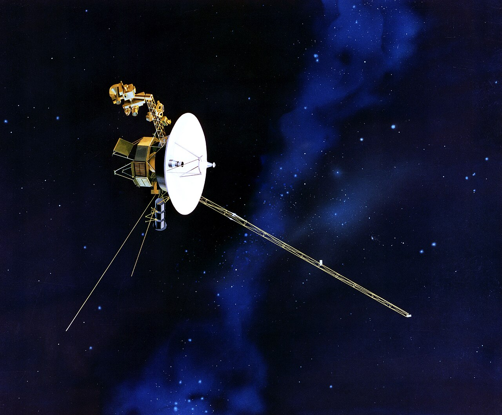

Nach Newtons Trägheitsgesetz fliegt ein Körper immer geradeaus, solange keine Kräfte auf ihn einwirken. Die NASA-Sonde Voyager 1 hat das Sonnensystem offiziell verlassen!

de.wikipedia.org/wiki/Voyager_1
Berechnen Sie, wie stark die Anziehungskraft der Sonne auf die Sonde heute noch ist.
Vergleichen Sie das Ergebnis mit der Gewichtskraft der Sonde auf der Erde.
Mit welcher Beschleunigung wird die Voyager durch die Sonne abgebremst?
Wie groß ist die potentielle Energie der Voyager im Schwerefeld der Sonne? Anders gefragt: Wie viel Energie musste aufgebracht werden, um die Voyager in die "Höhe" 19,42·10⁹ km zu bringen?
Vergleichen Sie die potentielle Energie aus Aufgabe 4 mit der Näherung $E_{pot} = m \cdot g \cdot h$.